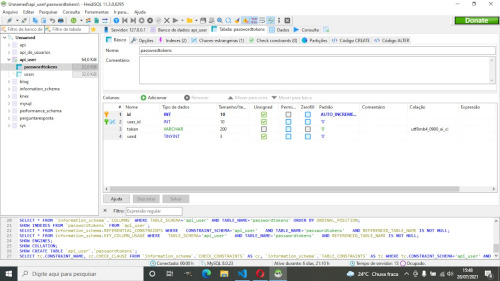
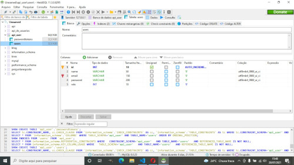

Este projeto se baseia em uma API REST de usuários feita com NodeJs e express que faz conexão com uma página web feita em VueJs, com ferramentas como criação, edição, listagem e exclusão de usuários.Além de todas essas funcionalidades, foi implementado um sistema de autentificação via token para o acesso da ferramenta.Apenas usuários administradores podem acessar o CRUD para realizar as operações com os usuários.Além disso, foi implementado um sistema de recuperção de senha que funciona apenas por meio de requisições POST, esta funcionalidade não foi implementada no front-end, ficando como desafio futuro.No demais, espero que apreciem o projeto e esperem por projetos mais aprofundados e robusto futuramente.
Atenciosamente, Eduardo Augusto Oliveira.
Para iniciar o projeto com sucesso, navegue até sua pasta com o seu terminal de preferência e digite os seguintes scripts:
Depois de instaladas, vá até o arquivo apiuserssql.sql e utilize os scripts SQL para criar a base de dados corretamente, caso queira criar a partir de um sofware de manipulação de bancos de dados SQL, recomendo o HeidiSQL.
A seguir, instruções de como devem ser criadas as tabelas no HeidiSQL:
imgApós isso, vá até a pasta /api_users/database e entre no arquivo connection.js e modifique o seguinte script para os dados do seu mysql:
 
var knex = require('knex')({
client: 'mysql2',
connection: {
host : '127.0.0.1',
user : '>>usuário aqui <<',
password : '>>senha aqui<<',
database : 'api_user'
}
});
Depois de todas essas etapas, inicie o servidor da API navegando até a pasta api_users com seu terminal e digitando o script >> npm node.js<<,após isso, cadastre um usuário na rota POST localhost:3000/user.
Após cadastrar, vá até o seu banco de dados e mude o campo role na tabela users para 1, assim você terá seu primeiro usuário admin, assim podendo acessar todas as rotas.Os uruários com role == 1 são admins e com role == 0 são usuários comuns.
Após iniciado o servidor da api conforme explicado acima, navegue até a pasta users na raiz do projeto e digite o seguinte script npm run serve<<, assim iniciando todo o projeto.
Parâmetros: Nenhum
Corpo da requisição: Nenhum
Resposta:
{
Api de usuários!
}
Parâmetros: Nenhum
Corpo da requisição: Nenhum
Exemplos de resposta:
Status code: 200
[
{
"id": 1,
"email": "duduaugustooliveira@gmail.br",
"role": 1,
"name": "Eduardo"
}
]
Status code: 403
{
Você não tem permissão para isso!
}
Status code : 403
{
Você não está autenticado
}
Parâmetros: Nenhum
Corpo da requisição:
{
"email":"exemplo@exemplo.com"
"name":"Fulano"
"password":"1234"
}
Exemplo de respostas:
Status code: 406
{
O e-mail já está cadastrado!
}
Status code: 200
{
Tudo ok!
}
Status code: 403
{
Você não tem permissão para isso!
}
Status code : 403
{
Você não está autenticado
}
Parâmetros: id do usuário
Corpo da requisição:
{
"email":"exemplo@exemplo.com",
"name":"Fulano",
"password":"1234",
"role":"0"
}
Exemplos de respostas:
Status code : 406
{ Err ... }Status code : 406
{ Ocorreu um erro no servidor! }Status code: 403
{ Você não tem permissão para isso! }Status code : 403
{ Você não está autenticado }DELETE localhost:3000/user/:id
Parâmetros: id do usuário
Corpo da requisição: Nenhum
Exemplo de respostas:
Status code: 200
{ Tudo ok! }Status code: 406
{ Err ... }Status code: 403
{ Você não tem permissão para isso! }Status code : 403
{ Você não está autenticado }POST localhost:3000/recoverpassword
Parâmetros: Nenhum
Corpo da requisição:
"email":"exemplo@exemplo.com"Exemplos de respostas:
Status code: 200
{ Exemplo de token:123465689874 }Status code: 406
{ Err... }POST localhost:3000/changepassword
Parâmetros: Nenhum
Corpo da requisição:
"password":"4785", "token":"147891482588"Exemplos de respostas:
{ Senha alterada! }Status code: 406
{ Token errado! }POST localhost:3000/login
Parâmetros: Nenhum
Corpo da requisição:
"password":"4785", "email":"exemplo@exemplo.com"Exemplos de respostas:
Status code: 200
{ Token : aqui vem o token para autentificação }Status code: 406
{ Senha incorreta! }Status code: 406
{ Err... }Site que consone a API
Após que iniciar o servidor local da API e executar o npm run serve na pasta users, o terminal fornecera uma url para o acesso do site, onde poderá navergar com seu usuário e realizar as operações com os usuários
Contato
Para qualquer duvida em relação ao projeto e outros assuntos, entre em contato pelo github ou pelas redes sociais: